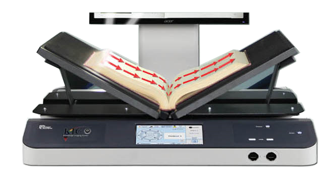

KIC Bookeye 4
Beautiful Images - Fast and Easy, and Nondestructive
Face-Up Scanning is Faster!
KIC Bookeye 4 walk-up scanning stations are face-up scanners that save a lot of time and reduce book spine damage because they capture two face-up pages of a book with each scan and do not require the user to flip the book twice for each page. KIC analyzes each image, and automatically splits it into two separate images. In addition, black edges are automatically removed and the content is straightened, producing clean, professional looking images - important for electronic reserves, course curriculum materials and research reports. These automatic image treatment functions also save a lot of faculty, administrator, and student time.Capture Area Comparison
The capture area of copiers is about half that of KIC Bookeye 4 while the capture area of typical consumer scanners is smaller still. With a 18 X 24 inch capture area, Bookeye 4 captures it all!Scan Oversized Reference Books
With the view screen on the side, the Bookeye 4 neck provides an ideal bookstop for scanning very large reference books. KIC True2Touch provides full rotation capabilities so that you can scan in the orientation that suits you best.
The Bookeye 4 V2's 600dpi Option
With its 600dpi option, Bookeye 4 is the only true preservation quality book scanner that's also ideal for self-service.
To capture moving objects, digital cameras must use array CCDs, which capture all parts of the object at the same instant. That's why affordable digital cameras have fewer than 50 megapixels. And those pixels must be further divided into red, green and blue sub-pixels. Since books don't move while being scanned, the Bookeye 4 is able to utilize linear CCD technology to produce ultra-clear images with astounding 140 megapixels. Each pixel in a linear CCD includes full red, green and blue sub-pixels. However, high resolution scanning is meaningless if the lens system does not produce highly focused images. Since ultra-high resolution "spy satellite" lenses are quite expensive, the Bookeye 4 scans from left to right, allowing it to follow the curve of an open book and maintain excellent focus, whether in V-mode or flat mode.The Bookeye 4's left-to-right scanning allows it to follow the contours of virtu- ally any book, producing better 600 dpi images than other book scanners that claim to produce 600 dpi images.
